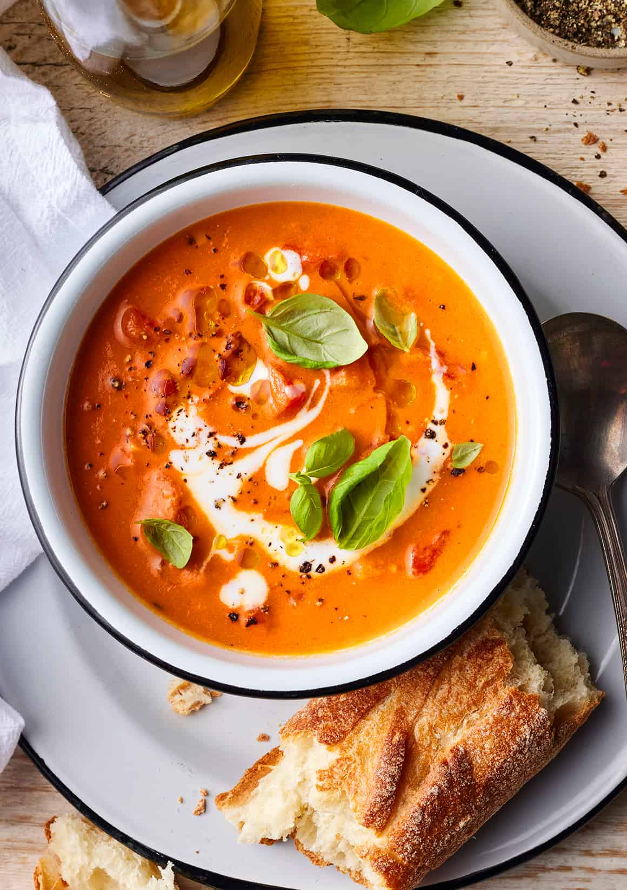

Tomato Soup

Soupyyyyyyyyyyyyyy soupy soup.
It's tomato flavored soup! What more could you ask for?
Add a grilled cheese and it's Comfort Food City around here! Mmmm soupy.
Ingredients
- 4 peeled, seeded, and diced tomatoes
- 4 cups of tomato juice
- 14 leaves of fresh basil
- 1 pint heavy whipping cream
- 1 stick of butter
- salt and pepper to taste
Instructions
- Simmer the tomatoes in the tomato juice.
- Remo from heat, stir in the basil, and puree with an immersion blender.
- Stir in the cream and butter until the desired texture and taste are reached.
- Season with salt and pepper and serve hot.